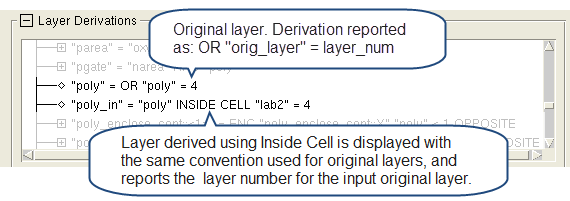

To access: Click the Rules button to display the Rules pane, specify a rule file, and click the icon next to “Layer Derivations” to open the tree. Expand the tree as needed.
See the following sections for detailed descriptions:
The layer derivations are organized in the following different ways:
Layers (Alphabetized, n_layers)
Lists all layers alphabetically, where n_layers is the total number of layers. Each derived layer can be expanded to see the full derivation.
Layers (Top-Down, n_top / n_layers)
Lists all original and derived layers at the top of the derivation tree; layers at the top of the derivation tree are not used in further layer derivations.
Layers (Bottom-Up, n_bottom / n_layers)
Lists all layers at the bottom of the derivation tree; such layers are not the result of any layer derivation.
Checks (n_checks)
Lists all rule checks and the derived layer or layers that result from the check. Only present for run types that include checks.
Devices (n_devices)
Lists the devices that are defined in the rule file, along with the layers that are part of the device definition.
A layer that is not part of any layer derivation is listed in both the top-down and bottom-up listings.
The display conventions for the layer derivation tree are shown in Table 1.
Convention |
Definition |
|---|---|
Indicates no further expansion is possible. For original layers, the layer derivation is displayed as follows: “orig_layer” = OR “orig_layer” = layer_number See Usage Notes for additional information. |
|
Indicates the layer is part of a Connect or Sconnect statement. |
|
rule_check::num |
Indicates the derived layer output from the check rule_check. Some rules have more than one output layer, and this is indicated by num. |
rule_check::layer |
Indicates that layer is derived within the check rule_check. |
DEVICE … (rule_file:line_num) |
Gives the device definition, ending with a link to the definition in the rule file. |
For most cases, examining the layer derivations tree in one of the available listings provides the information needed for debugging. The layer derivation tree can also be saved to a text file using the Save button if further examination with advanced search tools is needed.
Calibre Interactive does not access the Calibre database constructor when displaying the layer derivation tree. Some layer operations, such as Inside Cell, are processed within the database constructor; this can cause Calibre Interactive to display layers derived using such layer operations with the convention used for original layers. For example, Calibre Interactive displays a layer derived using the Inside Cell operation in the following manner:
